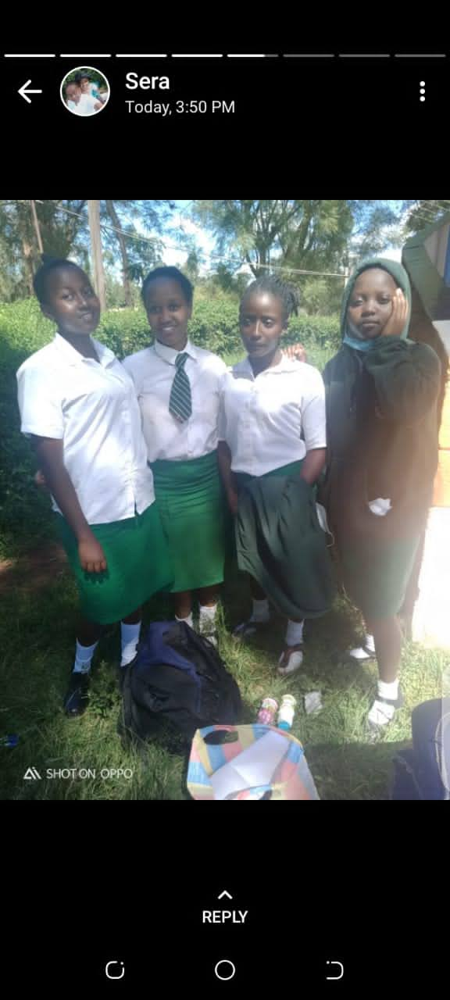
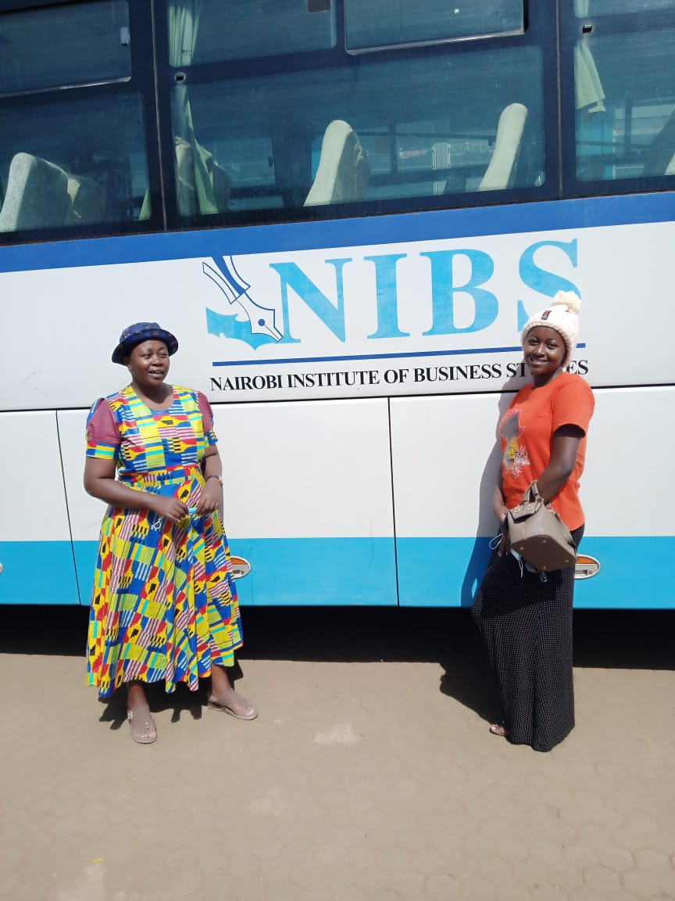
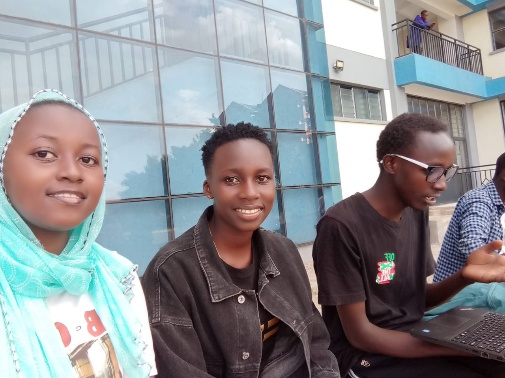
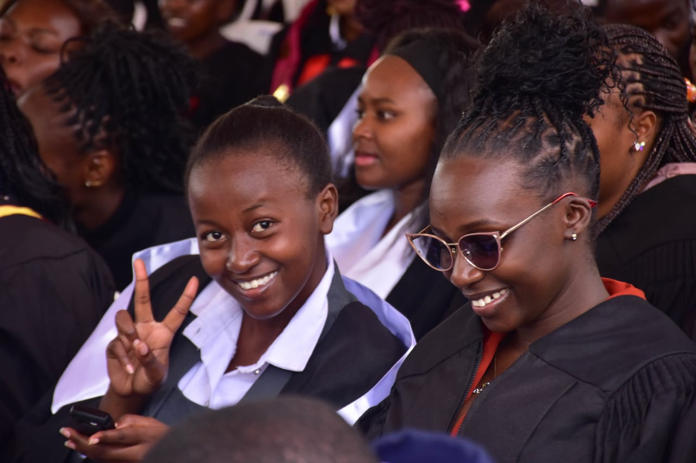
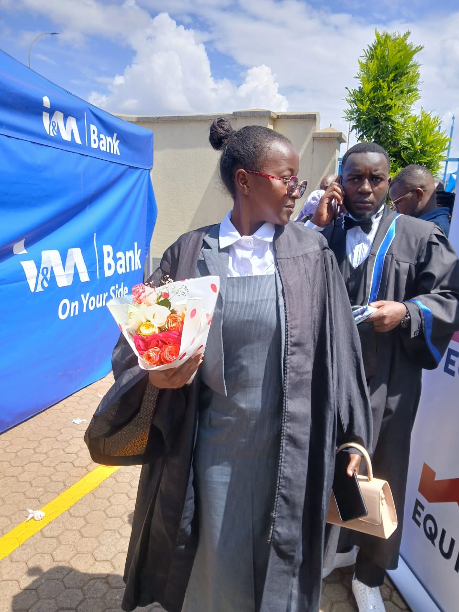
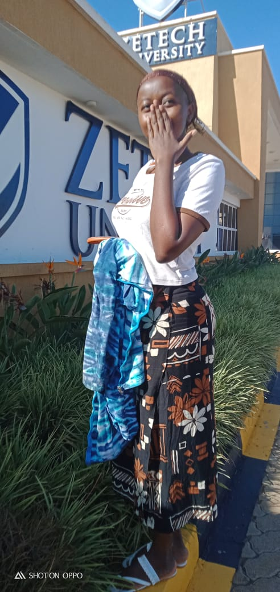

Academic Journey
My academic journey has been shaped by different schools, new environments, inspiring teachers, and the friendships that made learning enjoyable. From my early childhood learning to my current university life, each stage has played an important role in who I am today.
Primary Education
My schooling began at St. Teresa School, where I attended PP1 to PP3. I later transferred to Little Flower Primary School for Class 1 to Class 4. This school played a major role in my academic growth, and I was honored to receive an award as the Top Student in Lamu County while in Class 4.
For Class 5 and 6, I joined Good Shepherd Primary School. Here, I met brilliant classmates who motivated me to work even harder. The teachers were supportive and helped sharpen my academic skills further.
I completed Class 7 and 8 at Lake Kenyatta Primary School. At the time, it was mandatory for private school learners to sit for their K.C.P.E in a public school, so this transition introduced me to a new environment, new friends, and new teachers who made my upper primary years memorable.
All my primary education took place in Lamu County, a place that shaped my character, discipline, and passion for education.
High School Journey
I attended St. Alexis Ruchu Girls High School in Murang’a County. This phase of life came with many adjustments—new climate, a new language environment, and a new culture, especially for someone coming from the Coast region.
My high school life was a mix of challenges and victories, and I cannot complain because all the experiences contributed to my growth. One major challenge came during the COVID-19 pandemic when we were forced to return home, despite the fact that I was in my final year. Regardless of the uncertainties, I managed to complete my secondary education successfully.
College & University Education
My higher education journey began at the Nairobi Institute of Business Studies (NIBS), where I pursued my Diploma. After successfully completing it, I advanced to pursue my Bachelor’s Degree at Zetech University.
friends at NIBS colege
Graduation at NIBS College
 Recently at Zetech University
My academic journey has taught me resilience, discipline, and the importance of trusting in God. I am grateful for how far I have come, and I look forward to achieving even more in the future.